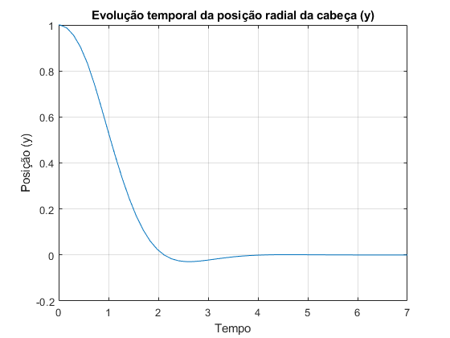
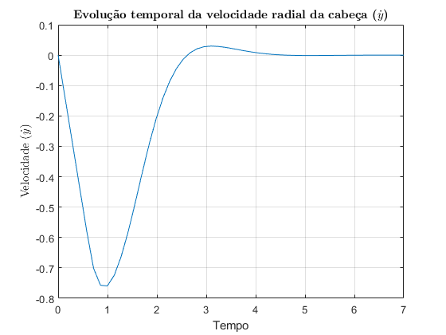
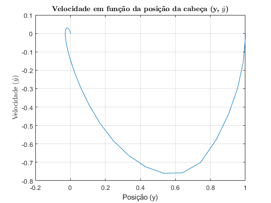
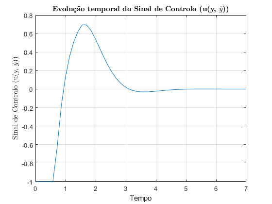
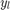
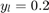
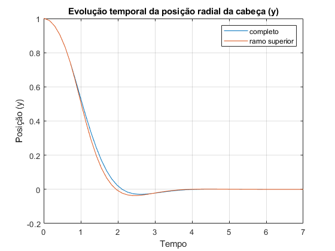
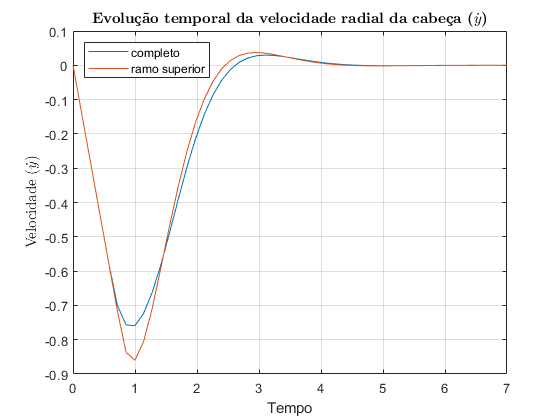
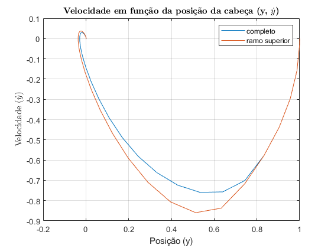
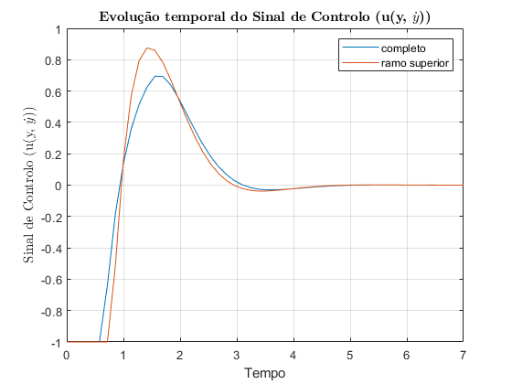

Exercício 11
Controlador completo
%Reset do ambiente de trabalho clear; close all; %Subsys com ambos os ramos f = 1; %Tempo de Simulação ttotal = 7; %Referência escolhida Ref = 0; %Sem perturbação b = 0; %Intervalo escolhido do exercício anterior yl = 0.2; %Calculo dos k's k1 = 1/yl; k2 = sqrt(2*k1); sim('modified_controller'); figure; plot(tout, y); grid on; title('Evolução temporal da posição radial da cabeça (y)'); xlabel('Tempo'); ylabel('Posição (y)'); figure; plot(tout, dy); grid on; title('\textbf{Evolu\c{c}\~ao temporal da velocidade radial da cabe\c{c}a ($\dot{y}$)}', 'Interpreter', 'latex'); xlabel('Tempo'); ylabel('Velocidade ($\dot{y}$)','Interpreter','latex'); figure; plot(y, dy); grid on; title('\textbf{Velocidade em fun\c{c}\~ao da posi\c{c}\~ao da cabe\c{c}a (y, $\dot{y}$)}', 'Interpreter', 'latex'); xlabel('Posição (y)'); ylabel('Velocidade ($\dot{y}$)','Interpreter','latex'); figure; plot(tout, u); grid on; title('\textbf{Evolu\c{c}\~ao temporal do Sinal de Controlo (u(y, $\dot{y}$))}', 'Interpreter', 'latex'); xlabel('Tempo'); ylabel('Sinal de Controlo (u(y, $\dot{y}$))','Interpreter','latex');   
Comentários:
Da análise da Fig.x, Fig.x, Fig.x e Fig.x podemos verificar que o comportamento de chattering desapareceu tal como foi previsto no exercício anterior. Também podemos ver o efeito do intervalo  que eliminou o efeito de chattering a custo da velocidade de resposta do sistema. Esta degradação temporal é maior quanto maior for que para  corresponde a um atraso de resposta de x unidades temporais.
Controlador com apenas ramo superior da função f(x)
%Valores do controlador completo y0 = y; dy0 = dy; u0 = u; %Subsys com apenas o ramo superior f = 0; %Tempo de Simulação ttotal = 7; %Referência escolhida Ref = 0; %Sem perturbação b = 0; %Intervalo escolhido do exercício anterior yl = 0.2; %Calculo dos k's k1 = 1/yl; k2 = sqrt(2*k1); sim('modified_controller'); figure; plot(tout, y0, "DisplayName", "completo"); hold on; plot(tout, y, "DisplayName", "ramo superior"); grid on; title('Evolução temporal da posição radial da cabeça (y)'); xlabel('Tempo'); ylabel('Posição (y)'); legend(); figure; plot(tout, dy0, "DisplayName", "completo"); hold on; plot(tout, dy, "DisplayName", "ramo superior"); grid on; title('\textbf{Evolu\c{c}\~ao temporal da velocidade radial da cabe\c{c}a ($\dot{y}$)}', 'Interpreter', 'latex'); xlabel('Tempo'); ylabel('Velocidade ($\dot{y}$)','Interpreter','latex'); legend('Location', 'NorthWest'); figure; plot(y0, dy0, "DisplayName", "completo"); hold on; plot(y, dy, "DisplayName", "ramo superior"); grid on; title('\textbf{Velocidade em fun\c{c}\~ao da posi\c{c}\~ao da cabe\c{c}a (y, $\dot{y}$)}', 'Interpreter', 'latex'); xlabel('Posição (y)'); ylabel('Velocidade ($\dot{y}$)','Interpreter','latex'); legend(); figure; plot(tout, u0, "DisplayName", "completo"); hold on; plot(tout, u, "DisplayName", "ramo superior"); grid on; title('\textbf{Evolu\c{c}\~ao temporal do Sinal de Controlo (u(y, $\dot{y}$))}', 'Interpreter', 'latex'); xlabel('Tempo'); ylabel('Sinal de Controlo (u(y, $\dot{y}$))','Interpreter','latex'); legend();   
Comentários:
Apartir da análise da Fig.x, Fig.x, Fig.x e Fig.x podemos concluir que o controlador com o Subsys descrito apenas pelo ramo superior tem um maior overshot no Sinal de Controlo o que por sua vez corresponde a uma velocidade máxima maior e uma acelaração máxima superior desnecessária pois nada contribuí para a velocidade de resposta do sistema sendo o controlador completo de superior qualidade nestas condições.